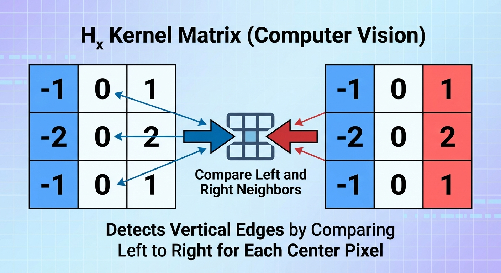
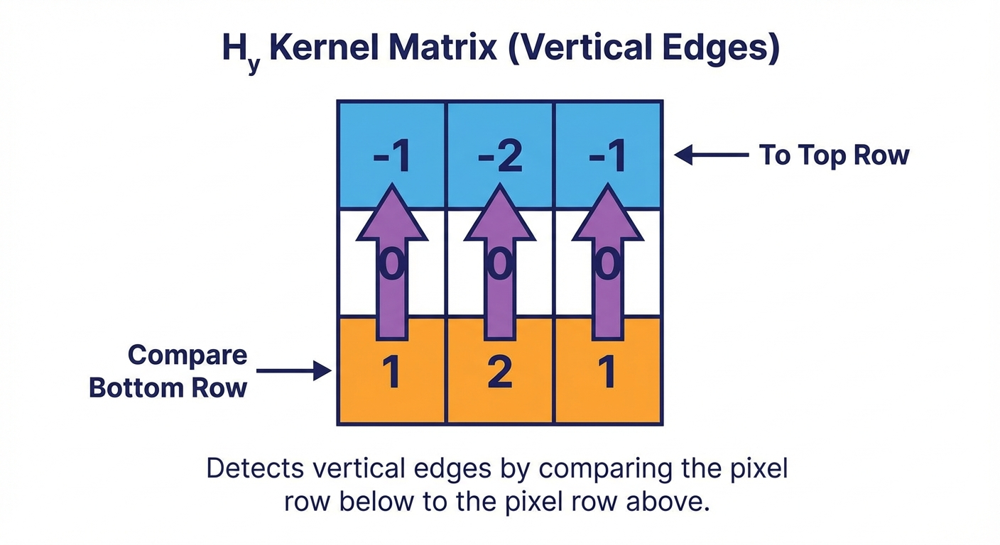
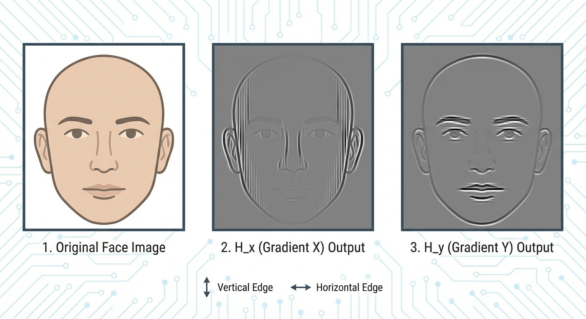

Imagine looking at a simple photo of a coin sitting on a dark table. To you, the boundary between the coin and the table is obvious. Your brain instantly recognizes the shape.
But to a computer, that image is just a massive grid of numbers—pixels ranging from 0 to 255. The computer doesn't know what a 'coin' is. So, how does it figure out where the table ends and the coin begins?
The answer lies in detecting changes. In computer vision, an Edge is defined as a significant local change in image intensity.
Think of an image as a terrain map. A flat color is a plateau. A gradual shadow is a gentle slope. But an edge? An edge is a cliff—a sudden drop or jump in brightness values.
In image processing, the gradient measures the directional change in the intensity or color in an image. It tells us how fast pixel values are changing and in which direction.
To find these cliffs, we need a tool that measures the steepness of the terrain. We call this the Gradient.
In previous lessons, we used kernels to blur or sharpen. Now, we will use a kernel designed specifically to mathematically hunt down these gradients. This is the Sobel Filter (or Sobel Operator).
The Sobel Operator is actually a dynamic duo. It uses two separate \(3 \times 3\) kernels to find edges in two different directions.
First, meet \(H_x\). This kernel is an expert at finding Vertical Edges.
Let's break down the math inside \(H_x\):
$$ H_x = \begin{pmatrix} -1 & 0 & 1 \\ -2 & 0 & 2 \\ -1 & 0 & 1 \end{pmatrix} $$
Notice the pattern? The right column is positive (\(1, 2, 1\)) and the left column is negative (\(-1, -2, -1\)). When we slide this over an image, it subtracts the pixels on the left from the pixels on the right.
If the left and right neighbors are identical (a flat wall), the result is \(0\). But if the right side is bright and the left is dark, the result is a large positive number. That's a vertical edge!
Next, meet the partner, \(H_y\). This kernel looks for Horizontal Edges.
$$ H_y = \begin{pmatrix} -1 & -2 & -1 \\ 0 & 0 & 0 \\ 1 & 2 & 1 \end{pmatrix} $$
This is simply \(H_x\) rotated by 90 degrees. It compares the bottom neighbors against the top neighbors to find horizontal lines.
When we run these two kernels over an image, we don't get a single 'edge image' immediately. We get two separate component images.
Let's look at an example using a portrait photo.
The output of applying \(H_x\) is called the horizontal gradient image, \(G_x\). The output of \(H_y\) is the vertical gradient image, \(G_y\).
So we have the pieces of the puzzle, but we need to put them together to see the full outline.
To reconstruct the complete edge map, we need to combine \(G_x\) and \(G_y\). We can treat these as vectors.
At every single pixel, we have a 'Vertical Strength' (\(G_y\)) and a 'Horizontal Strength' (\(G_x\)). To find the total strength of the edge, we use the Pythagorean theorem.
The Gradient Magnitude (\(G\)) is calculated as:
$$ G = \sqrt{G_x^2 + G_y^2} $$
This formula gives us the total intensity of the edge, regardless of its direction. This creates the final, glowing edge map we usually see.
But we can go further! We can also calculate exactly which way the edge is pointing using trigonometry. This is the Gradient Orientation (\(\theta\)):
$$ \theta = \text{atan2}(G_y, G_x) $$
Knowing the orientation is crucial for advanced algorithms like Canny Edge Detection, which traces along the edge direction to connect broken lines.
Let's try to visualize how these two values work together.
Notice that if \(G_x\) is high and \(G_y\) is 0, the edge is purely vertical. If both are equal, the edge is diagonal (45 degrees).
Let's prove we can do the computer's job. We are going to calculate the \(H_x\) value for a specific pixel.
Here is a \(3 \times 3\) patch of an image. We want to find the vertical edge score for the center pixel.
Image Patch:
$$ \begin{bmatrix} 10 & 50 & 50 \\ 10 & 50 & 50 \\ 10 & 50 & 50 \end{bmatrix} $$
We apply the \(H_x\) kernel:
$$ \begin{bmatrix} -1 & 0 & 1 \\ -2 & 0 & 2 \\ -1 & 0 & 1 \end{bmatrix} $$
We multiply the kernel weights with the image pixels and sum them up. Let's do it row by row:
Top Row: \((-1 \cdot 10) + (0 \cdot 50) + (1 \cdot 50) = 40\)
Middle Row: \((-2 \cdot 10) + (0 \cdot 50) + (2 \cdot 50) = 80\)
Bottom Row: \((-1 \cdot 10) + (0 \cdot 50) + (1 \cdot 50) = 40\)
Now, sum them up:
$$ 40 + 80 + 40 = 160 $$
The result is 160! Since this is a high positive number, it tells us there is a strong vertical edge here, transitioning from dark (left) to bright (right).
Excellent. You've just performed the core mathematical operation behind detecting structure in images.
Yes! If the image goes from Bright to Dark (instead of Dark to Bright), the result will be negative. However, when we view the final 'Magnitude' image, we square the values (\(G^2\)), which makes everything positive. We usually only care that an edge exists, not whether it's 'positive' or 'negative'.
You've successfully added edge detection to your computer vision toolkit. We learned that edges are just steep gradients in pixel intensity.
By using the Sobel Operator, we split the image into vertical (\(H_x\)) and horizontal (\(H_y\)) components. We then used the Pythagorean theorem to combine them into a Gradient Magnitude map, revealing the structure of the world—like that coin on the table—without needing color or texture.
In the next and final lesson of this chapter, we will zoom out and see how modern Artificial Intelligence doesn't just use Sobel filters—it actually invents its own filters to see the world.